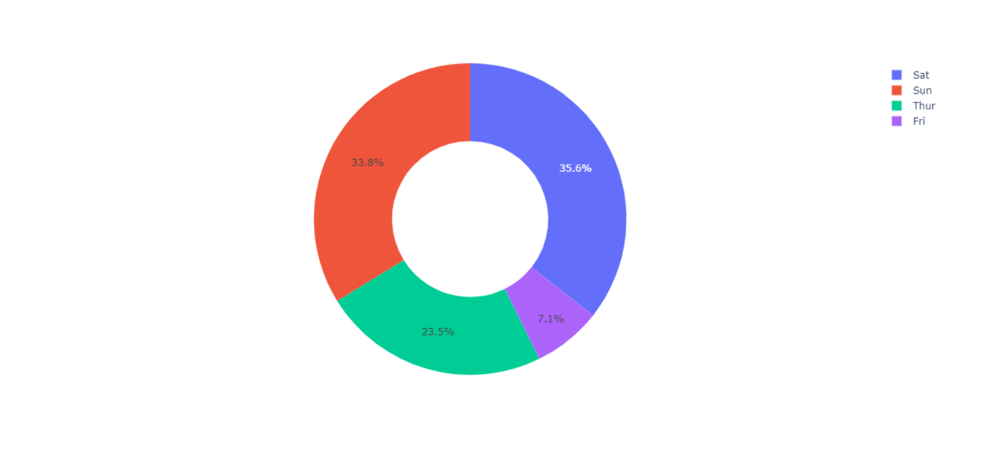

Getting started: Python! ⏯️
Contents
Getting started: Python! ⏯️#
Link to Video on HCU Cloud: Installing Python
Python works on a lot of platforms. On Unix-like operating systems, Python most of the time is part of the operating system and installed by default so you don’t need to install anything else. On Windows installing Python is as easy as installing any other software package. During the installation you will be asked if you want to add Python to your PATH which is a good idea (so you can use Python via the command line interface).
On macOS you can install Python from Homebrew
On Linux you can install Python from your distribution-specific package manager
On Windows you can install Python from Python.org or the Microsoft Store
After installing Python, please find out how to start your operating system specific command line interface or terminal. Usually you can look it up using your systems search function. In Linux and MacOS you would search for example for terminal, in Windows for command line. You can check for your Python version and see if Python has been installed correctly:
python --version
Consider the first step done! The next step would be to chose and install an integrated development environment or IDE. An IDE is software that provides developers with all tools needed to simplify workflows and have all important components for developing software at one place. Some IDEs look very similar to each other, some are rather specific to programming languages and some you can customize and configure yourself. If you have written Python code before and if you are familiar with an IDE of your choice we usually recommend you to use that. To have a common denominator, we will introduce you to Visual Studio Code or VS Code which is open source, free and supports many programming languages as well as extensions which might come in handy at a later point in your masters program! To offer an alternative with a “different but same” interface which is used in science quite often, we also show you how to install Spyder which might come in handy in the following semesters. The most important thing is that you are able to produce python files which works with either of those!
Visual Studio Code üíª#
Link to Video on HCU Cloud: Setting up VSCode
You can download Visual Studio Code for macOS, Linux and Windows at https://code.visualstudio.com/. Another advantage of Visual Studio Code is the documentation which you can take a look at https://code.visualstudio.com/docs/.
Since we already have installed Python on our system, setting up VS Code to understand that we want to write programs in Python is quite easy. To do so we start VS Code and on the left side we click on the extensions button (the one looking like a puzzle, check out the video in case you don’t know what to do) and search for “Python”. There is an extension called “Python” which is provided by Microsoft. Click on “Install” to set up Python support in VS Code. After the installation is done, you can create a new file with “File” -> “New file”. When creating a new file, VS Code will ask you to set up a programming language. In our case, who would’ve guessed it, we set up Python as our programming language. Well done!
Spyder üï∑Ô∏è#
Link to Video on HCU Cloud: Installing Spyder
You can download Spyder for macOS, Linux and Windows at https://www.spyder-ide.org/. You can also find Spyder on GitHub at https://github.com/spyder-ide/spyder! Getting started with Spyder is very easy. Spyder is fully written in Python and comes with it’s own Python version. It’s more straight forward than VS Code, both IDEs have their up- and downsides so you’re free to chose whatever you work with.
What can we do with Python? üöÄ#
We do not learn Python for the sake of learning Python. After learning the fundamentals of a programming language, many people ask themselves what to do next. One of Pythons strengths is the wide variety of things you can do with it. RealPythons “What can I do with Python” page sums up what you can do with Python in a great way. Some hand picked examples of what you can do with Python might be:
Data analysis with NumPy, Pandas and visualization with bokeh, matplotlib or plotly/dash
Deep Learning with PyTorch or TensorFlow
Optical character recognition with EasyOCR or pyTesseract
Working on geolocation with geojson or geopy as well as working with shape files with shapely or RasterIO
You can even control robots with Python and rospy!
Example projects ⚙#
Here are a few advanced projects with Python as a heads up. Don’t worry too much about how the results have been accomplished but rather at what you can do with Python. This is a very small excerpt of what you can do with Python - we will look at lots of projects during the semester.
Find vehicles in aerial imagery automatically: Link to paper
Create web applications with plotly and dash: Link to Dashboard | Link to Dash App-Gallery
Analyse data and make predictions for the future with scikit: Link to Website

Identify dog breeds automatically with PyTorch: Link to GitHub Repository